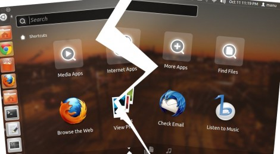

هفته قبل خبر ریلیز شدن گنوم ۳.۸ منتشر شده بود. و می خواستم روی اوبونتوی ۱۲.۰۴ نصب کنم ولی متأسفانه نمی شد. بعد کمی تحقیق متوجه شدم که کرنل اوبونتو ۱۲.۰۴ قدیمی است و از طرفی هم جدید ترین کرنلی که اوبونتو توی جدید ترین نسخه از سیستم عاملش که ۱۳.۰۴ "RARING" می باشد، استفاده کرده است، ۳.۸ یا شاید هم جدیدتر از آن باشد.
بر همین اساس و پس از کمی تحقیق برای نحوه نصب کرنل نسخه جدید روی نسخه های قبلی اوبونتو تونستم، آن کرنل را روی ۱۲.۱۰ بدون هیچ مشکلی نصب کنم. بعد از آن تصمیم گرفتم که این کرنل را روی اوبونتو ۱۲.۰۴ بود هم نیز نصب کنم. نصب کرنل همانا و بالا نیامدن سیستم همانا. این مشکل برای ۳ یا ۴ روز بنده را مشغول خودش کرده بود. تا اینکه به این فکر افتادم تا اون کرنل را حذف کنم تا سیستم بتواند با کرنل قبلی خودش کار کنه.

مراحل حذف کرنل
از آن جایی که هیچ نوع دسترسی به سیستم عامل نداشتم مجبور شدم تا از دیسک زنده اوبونتو برای رفع مشکل استفاده کنم.
بعد از بالا آمدن سیستم با دیسک زنده داخل برنامه ترمینال شدم و با استفاده از دستور زیر تونستم پارتیشنی را که لینوکس لوکال روی آن نصب است را پیدا کنم:
sudo fdisk -lسپس برای استفاده از و اعمال تغییرات باید آن پارتیشن را به صورت زیر mount می کردم:
sudo mount /dev/sda1 /media
sodu mount --bind /media/dev /dev
sudo mount --bind /media/sys /sys
sudo mount --bind /media/proc /procحال لازم بود تا فهرست بسته های کرنلی را که بر روی سیستم نصب شده بودند را جهت حذف، مشاهده کنم، برای همین باید برای سیستم مسیر پارتیشن mount شده را به عنوان root مشخص می کردم:
sudo chroot /mediaدر غیر این صورت فهرست بسته های دیسک زنده را نمایش می دهد.
dpkg --get-selections | grep linux-image
...
dpkg --get-selections | grep linux-headers
...با اجرای دستورات فوق لیست بسته های کرنل را به همراه وضعیت نصب آنها می توانید مشاهده کنید. اکنون طبق دستورات زیر و با استفاده نام کامل بسته کرنلی که می خواهدی حذف کنید، اقدام کنید. در اینجا فرض می کنیم که نسخه کرنل ما ۳.۸.۵ می باشد:
sudo apt-get purge linux-image-3.8.5-generic linux-image-extra-3.8.5-generic
sudo apt-get purge linux-headers-3.8.5 linux-headers-3.8.5-generic-paeو در نهایت هم لازم است تا گراب را به روز رسانی کنید:
sudo update-grubاکنون کرنل مشکل ساز حذف و سیستم با کرنل قبلی خودش بالا خواهد آمد، فقط کافی است نا سیستم را دوباره راه اندازی کنیم.